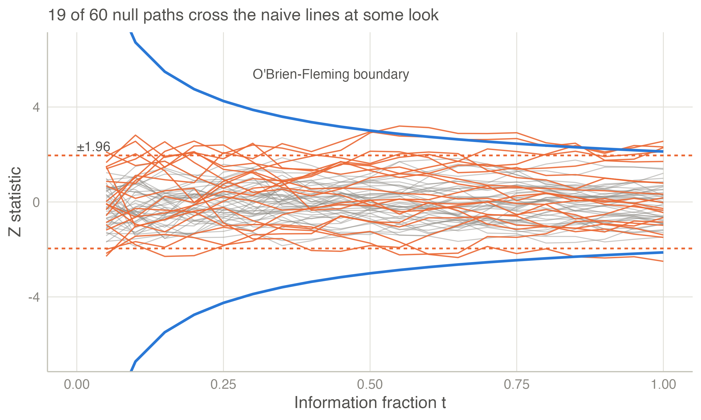
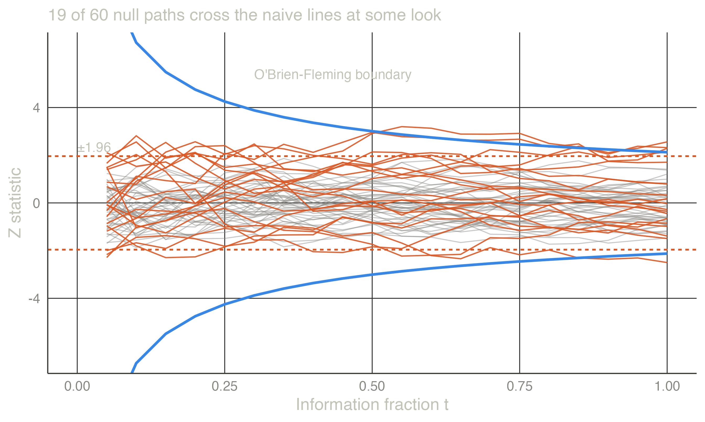

| Looks K | Overall type I error |
|---|---|
| 1 | 0.050 |
| 2 | 0.083 |
| 3 | 0.107 |
| 4 | 0.126 |
| 5 | 0.142 |
| 10 | 0.193 |
| 20 | 0.248 |
| 50 | 0.320 |
Why sequential analysis?
Repeated looks at accumulating data inflate the type I error; sequential designs plan the looks so that they do not.
Looking early is natural — and costly
A randomised trial recruits patients over several years. Its data monitoring committee (DMC) meets every few months. Patients are entitled to stop receiving an inferior treatment as soon as the evidence is clear, and funders do not want to pay for recruitment that can no longer change the conclusion (DeMets and Ellenberg 2016; Whitehead 2004). The same pressure exists in cohort studies, vaccine safety surveillance and laboratory experiments.
The difficulty is statistical. Each look is a new chance of a false-positive result. If the analyst tests the accumulating data at the usual 5 % level every time and stops at the first significant result, the overall probability of a false positive is no longer 5 %.
Repeated testing inflates the type I error
The table shows the overall two-sided type I error when a trial is tested at nominal \(\alpha = 0.05\) (\(|Z| \ge 1.96\)) at \(K\) equally spaced looks and stops at the first significant one (Armitage et al. 1969; Jennison and Turnbull 2000).
With five looks the error rate is almost three times the nominal one; with 50 looks it is 0.32. As the number of looks grows without limit, a false positive becomes certain.
The figure simulates 60 trials in which the treatment has no effect. Each grey path is the \(Z\) statistic of one trial, recomputed at 20 equally spaced looks. The paths that cross the naive \(\pm 1.96\) lines at any look — shown in orange — would all have been reported as “significant”. The blue O’Brien-Fleming boundary, which is wide early and narrow late, lets through only the planned 5 % over the whole trial.


What a sequential design specifies
A sequential design fixes, before any data are seen:
- When to look. The number of analyses \(K\) and their timing, expressed as the information fraction \(t_k\) — the proportion of the final statistical information available at look \(k\) (see Information).
- When to stop. Boundaries for the test statistic. Crossing the efficacy boundary stops the study and rejects \(H_0\). Crossing an optional futility boundary stops it for lack of effect.
- How large the study may become. The maximum sample size (or number of events), chosen so that the power is still \(1-\beta\) despite the stricter boundaries.
The boundaries are calculated so that the probability of ever crossing the efficacy boundary is exactly \(\alpha\) when \(H_0\) is true.
Benefits and costs
Benefits. The expected sample size is smaller than that of a fixed-sample study with the same power, often by 20–40 % when the treatment works (Jennison and Turnbull 2000; Todd et al. 2001). Participants are exposed to an inferior treatment for less time, and answers arrive earlier.
Costs.
- The maximum sample size is larger than the fixed one; the ratio is the inflation factor.
- The design needs a monitoring structure (a DMC, data cleaning at each look) and pre-specified rules (International Council for Harmonisation 1998; U.S. Food and Drug Administration 2019).
- A study stopped early for benefit tends to overestimate the effect. The naive estimate at the stopping look is biased, markedly so when few events have accrued (Bassler et al. 2010). Correct inference after a sequential test needs special methods (Inference).
Where to go next
The next page, Information, explains the statistical structure — the canonical joint distribution — that makes all these calculations possible for any endpoint. For book-length treatments, see Jennison and Turnbull (2000), Whitehead (1997), (2006) and Wassmer and Brannath (2016). Short reviews are Todd (2007) and Lakens (2014).
References
2006. In Statistics for Biology and Health. Springer New York. https://doi.org/10.1007/978-0-387-44970-8.
Armitage, P., C. K. McPherson, and B. C. Rowe. 1969. “Repeated Significance Tests on Accumulating Data.” Journal of the Royal Statistical Society. Series A (General) 132 (2): 235. https://doi.org/10.2307/2343787.
Bassler, Dirk, Matthias Briel, Victor M. Montori, et al. 2010. “Stopping Randomized Trials Early for Benefit and Estimation of Treatment Effects: Systematic Review and Meta-Regression Analysis.” JAMA 303 (12): 1180. https://doi.org/10.1001/jama.2010.310.
DeMets, David L., and Susan S. Ellenberg. 2016. “Data Monitoring Committees — Expect the Unexpected.” New England Journal of Medicine 375 (14): 1365–71. https://doi.org/10.1056/nejmra1510066.
International Council for Harmonisation. 1998. ICH E9: Statistical Principles for Clinical Trials.
Jennison, Christopher, and Bruce Turnbull. 2000. Group Sequential Methods with Applications to Clinical Trials. In Chapman & Hall/CRC Interdisciplinary Statistics Series. Chapman & Hall/CRC. https://doi.org/10.1201/9781584888581.
Lakens, Daniël. 2014. “Performing High‐powered Studies Efficiently with Sequential Analyses.” European Journal of Social Psychology 44 (7): 701–10. https://doi.org/10.1002/ejsp.2023.
Todd, Susan. 2007. “A 25‐year Review of Sequential Methodology in Clinical Studies.” Statistics in Medicine 26 (2): 237–52. https://doi.org/10.1002/sim.2763.
Todd, Susan, Anne Whitehead, Nigel Stallard, and John Whitehead. 2001. “Interim Analyses and Sequential Designs in Phase III Studies.” British Journal of Clinical Pharmacology 51 (5): 394–99. https://doi.org/10.1046/j.1365-2125.2001.01382.x.
U.S. Food and Drug Administration. 2019. Adaptive Designs for Clinical Trials of Drugs and Biologics: Guidance for Industry.
Wassmer, Gernot, and Werner Brannath. 2016. Group Sequential and Confirmatory Adaptive Designs in Clinical Trials. In Springer Series in Pharmaceutical Statistics. Springer International Publishing. https://doi.org/10.1007/978-3-319-32562-0.
Whitehead, John. 1997. The Design and Analysis of Sequential Clinical Trials. 2nd revised. Wiley.
Whitehead, John. 2004. “Stopping Clinical Trials by Design.” Nature Reviews Drug Discovery 3 (11): 973–77. https://doi.org/10.1038/nrd1553.